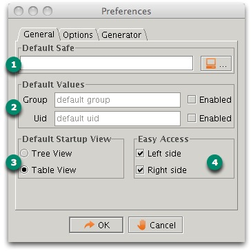
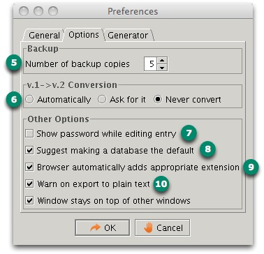
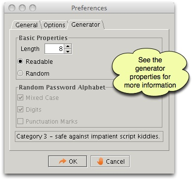

User Preferences
The preferences dialog box contains three tabs, these are discussed
below. Each tab contains its own specific group of functionality.
Tab 1 - General preferences

- The default password file. Each time you start the application, this file will be put forward as the default
candidate.
- The default group or uid value. If these are enabled, the application will automatically put these values in the
editor when creating new entries. This can be handy if the same uid or group is re-used very often. This reduces
the typing effort.
- The default view when the application starts can be selected.
- The quick buttons can be enabled here. You can select left or right side, or you can disable these completely if
you don't like them.
Tab 2 - Option preferences

- If the number of backup files is larger than zero, the
application will keep a number of backups available. The backup has the
same prefix as the original password safe, but a specific extension is
added so that the application can recognize the backups. In this way,
you can keep a limited history of changes.
- Indicates how conversion between file format v 1.0 and v 2.0 is
handled. If you choose "automatically" the application will
convert old version files to new version files without warning you.
When you select "ask for it" the application will do so. If you select
"never convert", the application will keep working with the old file
format.
- Indicates whether the password is shown in plain text while
editing. It can be handy, but it is less secure, someone could be
shoulder surfing without you noticing it.
- If you try to open a new file in the start panel, which is
different from the default database, the application will propose to
make this the default. If you do not like this, you can disable this
feature.
- If enabled, the file browser will automatically add the .dat,
.csv or .xml extensions even if they were not provided. This is a handy
feature, but it is implicit in nature.
- If this option is enabled, the application will warn you before
each export. Exporting is inherently unsafe. Its only purpose is
freedom.
Tab 3 - Generator preferences

These options are the same as discussed in the generator topic. The
difference is that the options here are the default options each time
you start the application.